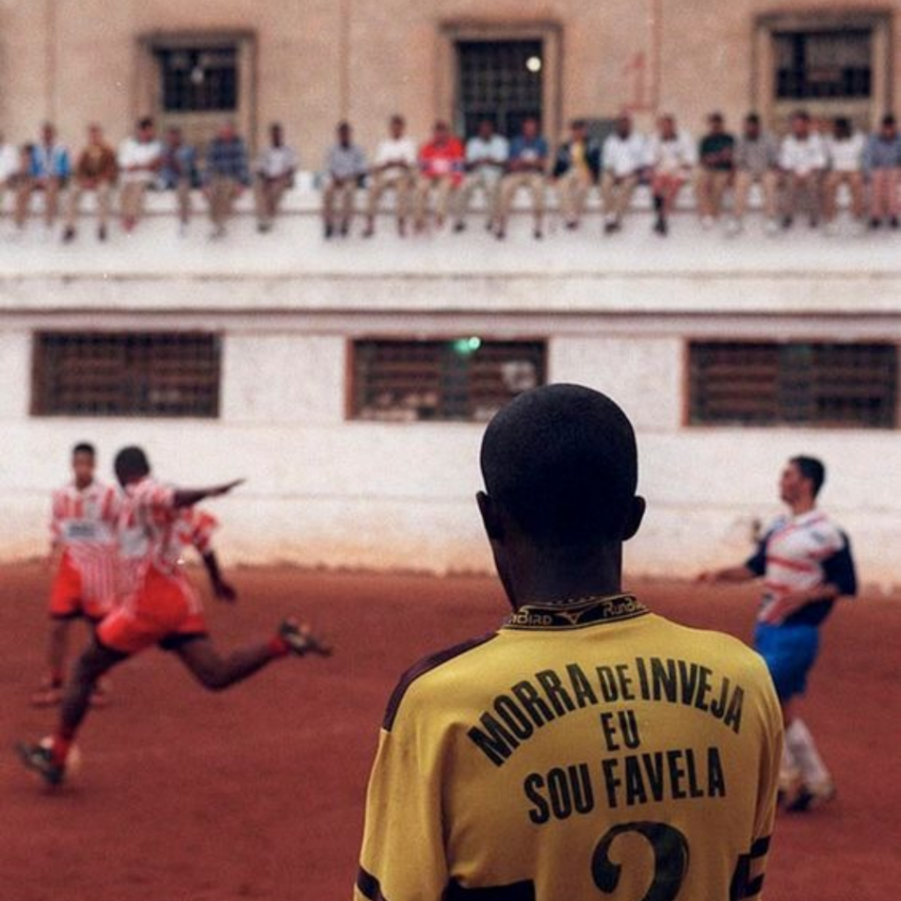
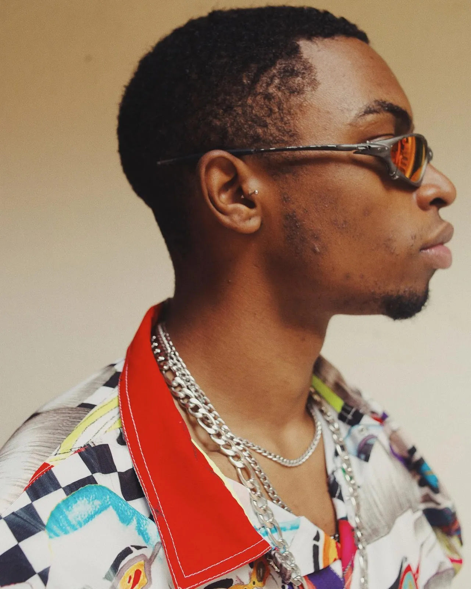

A moda da cultura periférica que dominou o mundo
Moda é um documento que acompanha e registra a trajetória de um povo. Desempenha papéis importantes na sociedade. É por meio das indumentárias que realçamos significados que dizem quem somos e de onde viemos, sendo importante, ainda, expressarmos mediante ao que usamos. E na periferia essa premissa não é diferente!
É por meio de origem, trajetória e estilo de vida que se evidencia a moda presente nas favelas da sociedade brasileira. O estilo periférico tipifica a vestimenta de quem vive ali e parte de um lugar singular e perene, da arte.
Tasha e Tracie, cantoras referência do movimento, nomearam como "It Favela" toda a moda que advém da periferia pra retratar a criatividade e autenticidade periférica que cria tendências muito antes de chegarem nas passarelas!
Estilos que nasceram nas periferias:

Mandrake
Tênis esportivo
Óculos espelhados
Camisas de time
Bonés de crochê
BrasilCore
Chinelo de dedo
Camisas do Brasil
Cabelo descolorido
Unhas decoradas
Shortinhos de lycra

Estilo Oversized
Roupas largas
Streetwear
Calça cargo
Blazers
Tendências voltando com tudo!
Em 2022, a Copa do Mundo no Catar inspirou a tendência "Brazilcore", que exalta as cores da bandeira do Brasil e trouxe de volta as camisas de futebol. A estética virou tendência nas redes sociais, mas nas favelas, o uso de camisas de time já era comum.
Outra tendência recente foi a volta dos anos 2000, com peças como calças com cós baixo e croppeds. A marca MIU MIU chamou atenção na Semana de Moda de Paris com sua microssaia, mostrando a influência da cultura periférica.
A marca Lacoste enfrentou críticas por usar influenciadores que não representavam seus consumidores, mas depois reconheceu a importância de abraçar um novo público, especialmente artistas da periferia que citam a marca em suas canções e clipes.
A influência da moda periférica é uma prova do poder criativo e transformador das comunidades marginalizadas. À medida que as tendências nascidas nas favelas continuam a ganhar destaque global, é fundamental reconhecer e valorizar a diversidade e a autenticidade dessas expressões culturais. Isso contribui para a democratização da moda e para uma maior representatividade em todos os setores da indústria, promovendo um diálogo mais inclusivo e equitativo entre as diferentes vozes e estilos que compõem o cenário da moda mundial.
“A indústria da moda não me representa, porque até quando ela tenta não ser excludente, ela é” - Tasha Okereke
 Contato da Agência:
Agência Fashion
Telefone: 5531432978
Av.Rio de Janeiro, 2499 - Belo Horizonte